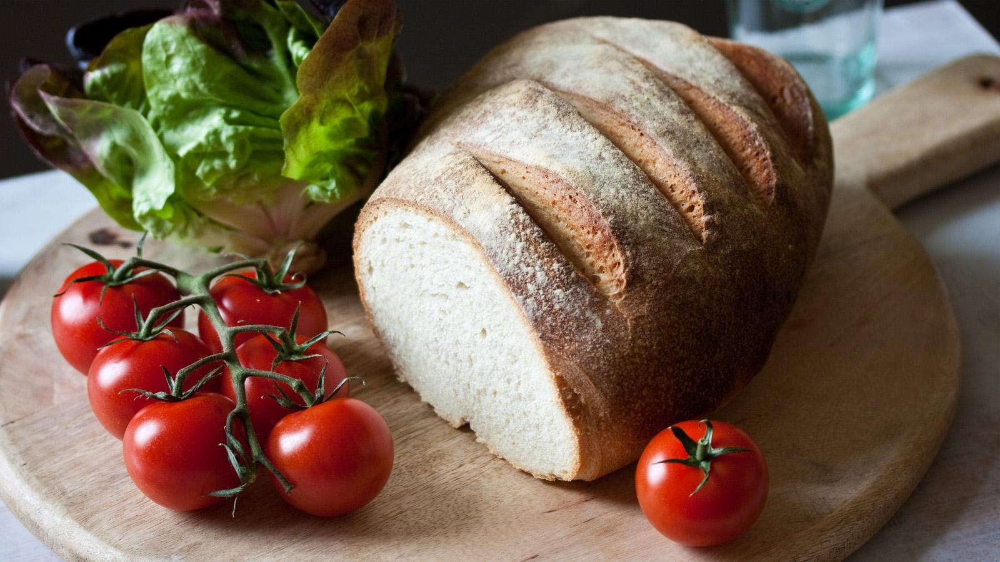

Bread

Introduction
Fresh from the oven with a sliver of butter melting into it, or the next day as toast with anything from marmalade to pâté spread on top, there’s no beating a homemade white loaf.
Ingredients
- 500g strong white flour, plus extra for kneading
- 10g salt
- 1 x 7g sachet of instant yeast
- 320ml warm water
- 25g salted butter
- extra oil and flour for kneading
Steps
- Place the dry ingredients in a bowl, taking care not to have the salt and yeast touching. Add the oil and 240ml/9fl oz of water.
- Using your hands, mix the ingredients together. Gradually add the remaining water (you may not need it all), until all the flour leaves the side of the bowl and you have a soft, rough dough.
- Pour a little oil onto a clean work surface. Sit the dough on the oil and begin to knead. Do this for 5-10 minutes, or until the dough becomes smooth and silky. Once the correct consistency is achieved, place the dough into a clean, oiled bowl. Cover with cling film and leave in a warm place until tripled in size.
- Once risen, place the dough onto a floured surface. Knock the dough back by folding it in on itself repeatedly. Do this until all the air is knocked out and the dough is smooth.
- To shape into the bloomer, flatten the dough into a rectangle. With the long side facing you fold each end into the middle then roll like a Swiss roll so that you have a smooth top with a seam along the base. Very gently roll with the heel of your hands.
- Place on a tray lined with parchment paper, cover and leave to prove for 1-2 hours at room temperature, or until doubled in size.
- Lightly spray with water and dust with a little flour. Make four diagonal slashes using a sharp knife across the top.
- Preheat the oven to 220/425F/Gas 7 and place a baking tray filled with water on the bottom shelf of the oven - this will create steam when the loaf is baking. Place the loaf on the middle shelf and bake for 25 minutes. After this time lower the heat to 200C/400F/Gas 6 and bake for a further 10 minutes. Remove from the oven and leave to cool on a wire rack.